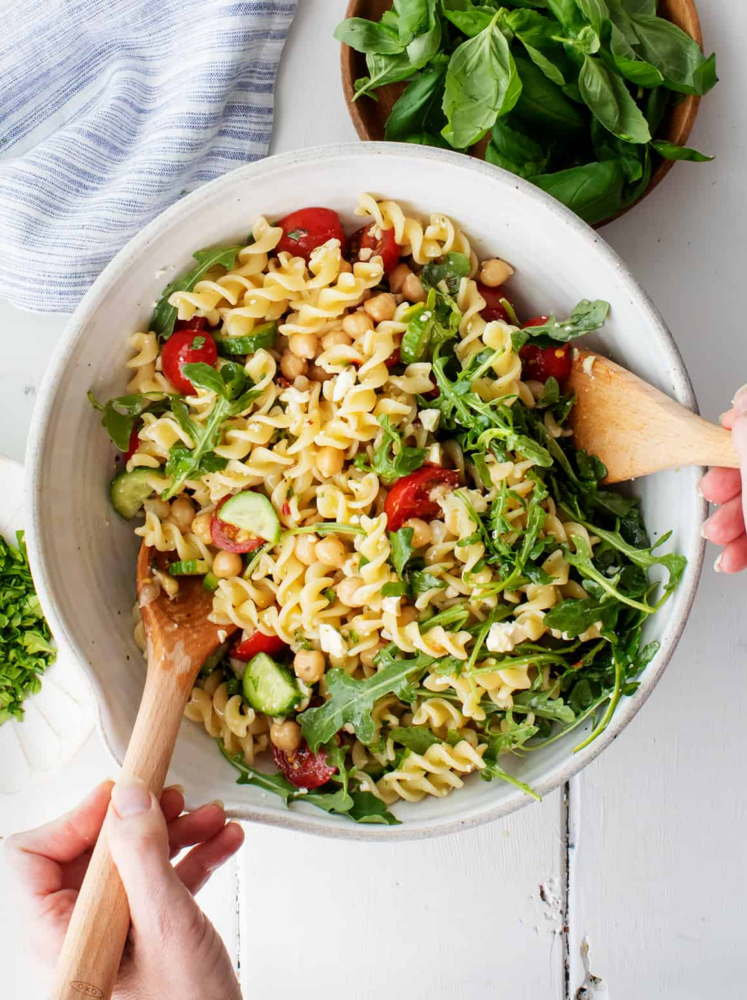

Pasta Salad Recipe

Description
A deliciously easy pasta salad recipe! This colorful and flavorful dish is perfect for any occasion. It features pasta, fresh vegetables such as cherry tomatoes, bell peppers,cucumbers, and black olives. Topped with an Italian-style salad dressing and garnished with basil leaves to bring everything together, this dish will satisfy any palate.
Ingredients
- 1 pound of pasta
- 1 bottle of Italian-style salad dressing
- 6 tablespoons of salad seasoning mix
- 2 cups cherry tomatoes, diced
- 1 green bell pepper, chopped
- 1 yellow bell pepper, chopped
- 1 red bell pepper, chopped
- 1 cucumber, chopped
- 1 can black olives, chopped
Steps
- Bring a large pot lightly salted water to a boil
- Cook pasta in water, stirring occasionally, for about 10 to 12 minutes
- Rinse pasta under cold water and drain
- Whisk Italian dressing anf salad spice together until smooth
- Combine pasta, tomatoes, bell peppers, cucumbers, and olives in a salad bowl
- Pour dressing over the salad and toss to coat
- Top with basil